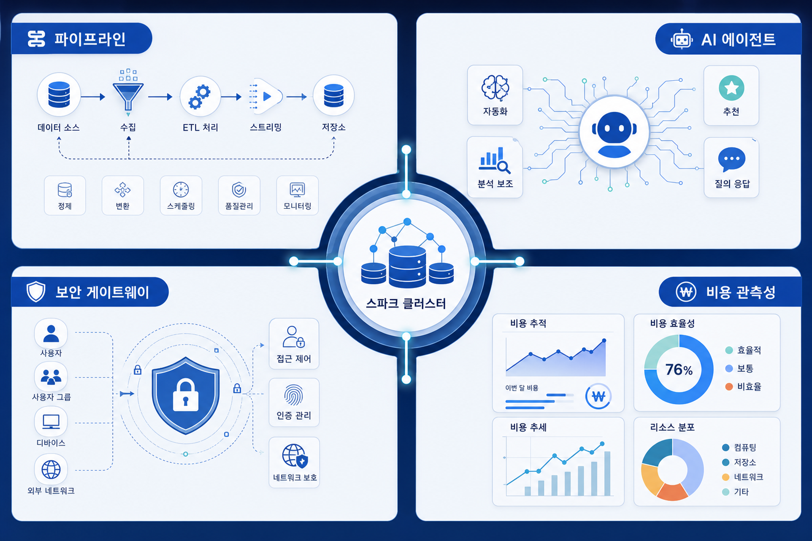
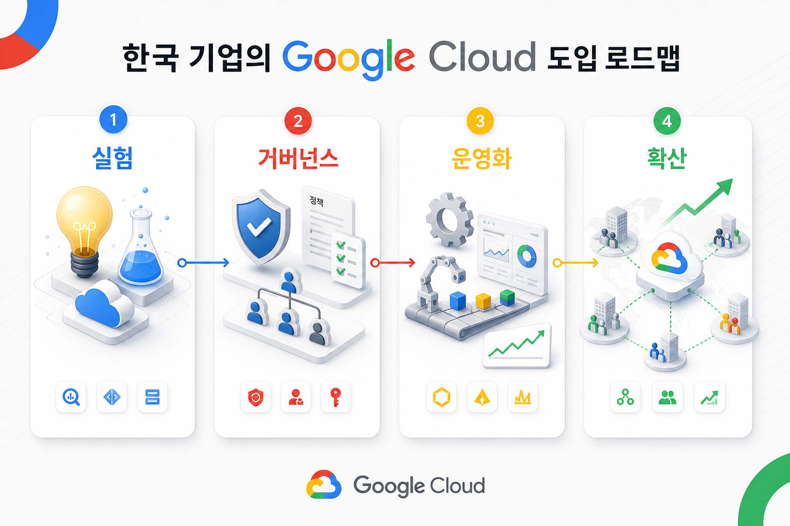

Enhancements to Managed Service for Apache Spark clusters
20260604_[DataAnalytics]Enhancements to Managed Service for Apache Spark clusters.md
원문 열기오늘 확인한 구글 클라우드 블로그 신호를 엔터프라이즈 인공지능, 데이터 기반 의사결정, 클라우드 운영, 보안 거버넌스 관점에서 재구성했습니다. 신규성 상태: 신규 저장 문서 기반.
20260604_[DataAnalytics]Enhancements to Managed Service for Apache Spark clusters.md
원문 열기최근 구글 클라우드 블로그 흐름은 개별 서비스 개선보다 기업이 데이터를 안전하게 연결하고, 인공지능 기능을 업무 흐름 안에 배치하며, 운영 리스크를 관리하는 방향으로 이동하고 있습니다.

| 변화 축 | 기업 적용 의미 | 확인해야 할 질문 |
|---|---|---|
| 데이터 기반 | 분석 저장소와 실행형 인공지능 사이의 연결 지점이 중요해집니다. | 데이터 권한, 품질, 계보가 업무 단위로 설명됩니까? |
| 에이전트 운영 | 기능 출시보다 도구 호출, 로그, 평가, 승인 경로가 도입 기준이 됩니다. | 실패 사례와 비용 폭증을 추적할 수 있습니까? |
| 보안 거버넌스 | 아이에이엠, 네트워크, 데이터 보호가 인공지능 사용 흐름과 결합되어야 합니다. | 사용자·에이전트·서비스 계정 경계가 분리되어 있습니까? |
파일럿 성공보다 운영 로그, 비용, 권한, 평가 기준을 먼저 설계해야 합니다.
부서별 데이터 접근과 외부 모델 호출 경계를 계약·보안·감사 기준으로 분리해야 합니다.
기술 검증을 넘어 현업 승인, 교육, 장애 대응, 지속 개선 체계를 함께 설계해야 합니다.

신규 기술은 생산성 향상 가능성과 함께 데이터 노출, 권한 오남용, 과금 예측 실패, 설명 불가능한 자동화라는 위험을 가져옵니다. 따라서 도입 계획은 서비스 기능 목록이 아니라 통제 구조와 함께 작성되어야 합니다.
목적: 전략 흐름 히어로
삽입 위치: 히어로 하단
image2 prompt: 한국어 전문 기술 블로그용 고품질 일러스트. 주제: Enhancements to Managed Service for Apache Spark clusters. 구글 클라우드 기반 엔터프라이즈 인공지능, 데이터 플랫폼, 보안 거버넌스를 추상적인 클라우드 노드와 한국 기업 회의실 분위기로 표현. 화면 안 텍스트는 최소화하고 있더라도 한국어로만 작성. 밝고 신뢰감 있는 색감, 16:9.
권장 비율: 16:9
alt 텍스트: 전략 흐름 히어로
목적: 데이터와 인공지능 운영 지도
삽입 위치: 본문 트렌드 분석 뒤
image2 prompt: 한국어 기업 보고서형 인포그래픽 이미지. Enhancements to Managed Service for Apache Spark clusters. 데이터 파이프라인, 인공지능 에이전트, 보안 게이트웨이, 비용 관측성을 네 개의 시각 구역으로 표현. 텍스트가 있으면 한국어 짧은 라벨만 사용. 16:9.
권장 비율: 16:9
alt 텍스트: 데이터와 인공지능 운영 지도
목적: 실행 전략 로드맵
삽입 위치: 실행 전략 섹션 뒤
image2 prompt: 한국 기업의 구글 클라우드 도입 로드맵을 보여주는 전문 블로그 이미지. 실험, 거버넌스, 운영화, 확산 단계를 상징적 카드와 선으로 표현. 텍스트는 한국어 또는 제품 고유명사만. 16:9.
권장 비율: 16:9
alt 텍스트: 실행 전략 로드맵